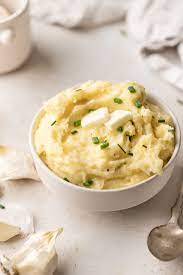

mashed potatoes

mashed potatoes are a really good option if you dint have more then 5 mins on your hand you
will need
- potatoes
- 1/3 milk or sour cream
thats it!
to prepare it follow the following steps
- boil the potatoes for 10mins untill they are really soft
- mash them using any spoon with a little bigger surface area
- add bit milk or sour cream and season it with salt and pepper